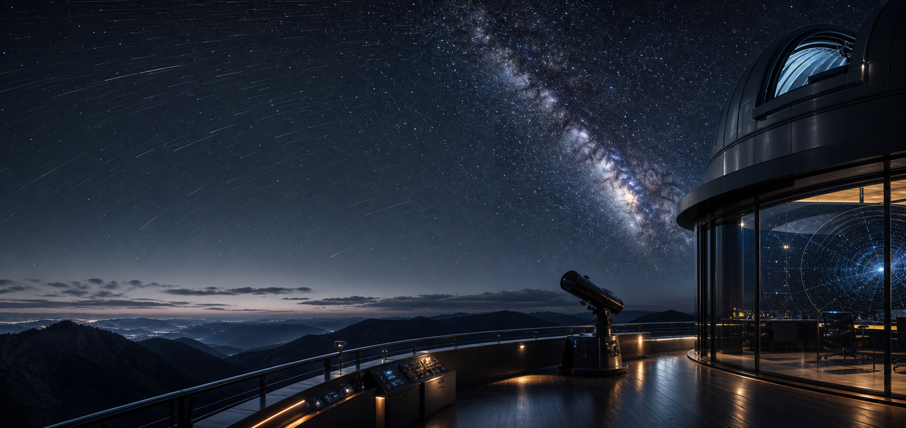

Operational density
Compact controls and schedule panels keep the page useful without turning it into a marketing shell.

Browser-native observing operations
A Linear-inspired planning interface for target visibility, airmass, Moon separation, hour angle, and schedule order. No backend dependency is required for this web version.
Web planning for observation windows, constraints, and target order.
The web planner runs in the browser with a deterministic schedule model. Tune the observatory, date, Moon separation, airmass, and hour-angle limits, then run the plan to update target windows and schedule order.
The globe emphasizes the observatory as a live operating point: city lights, a soft atmospheric edge, and a pulsing site marker update with the planner selection.
Compact controls and schedule panels keep the page useful without turning it into a marketing shell.
Visibility bars, diagnostics, and score states update when the observer changes constraints.
Linear-style panels, restrained borders, and soft halos preserve a focused product feel for night work.